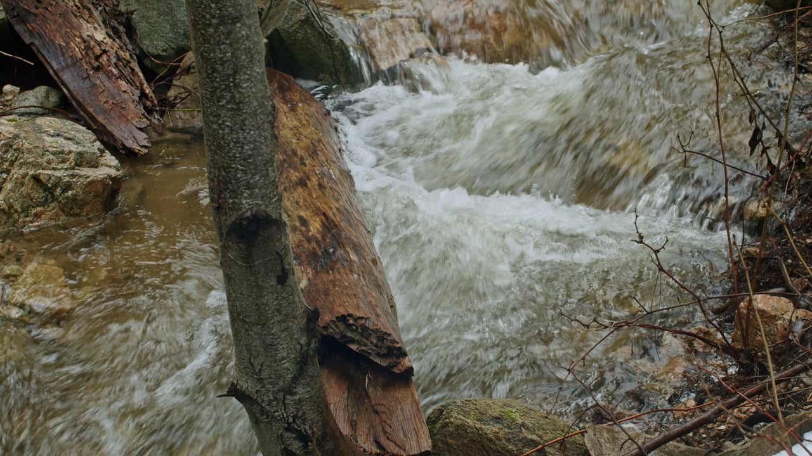
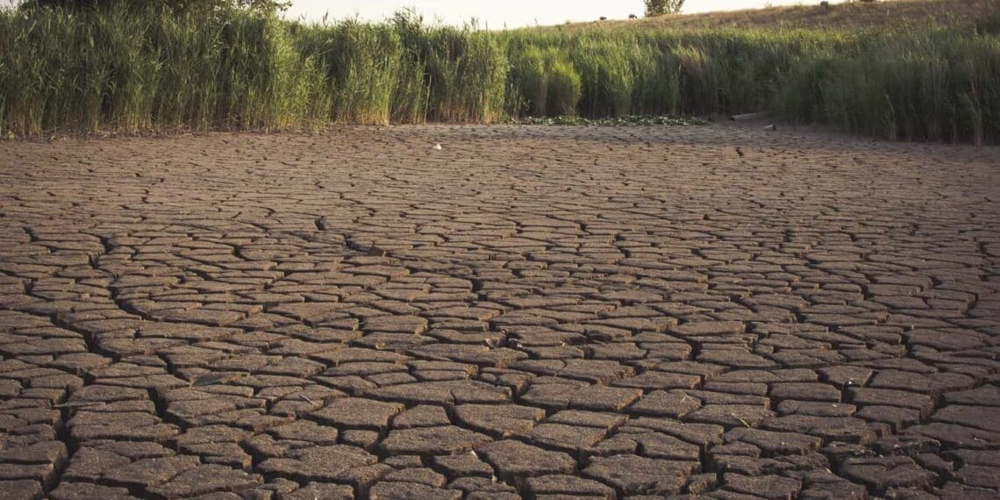
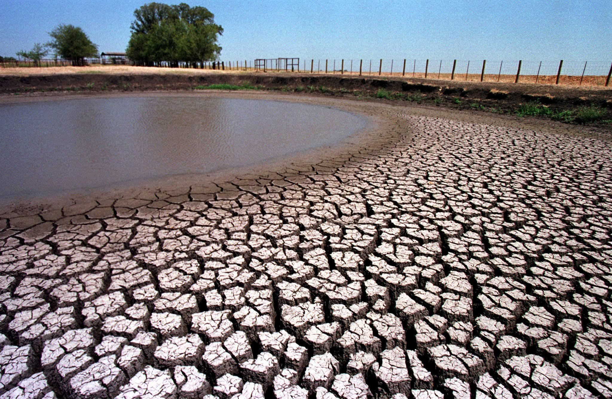
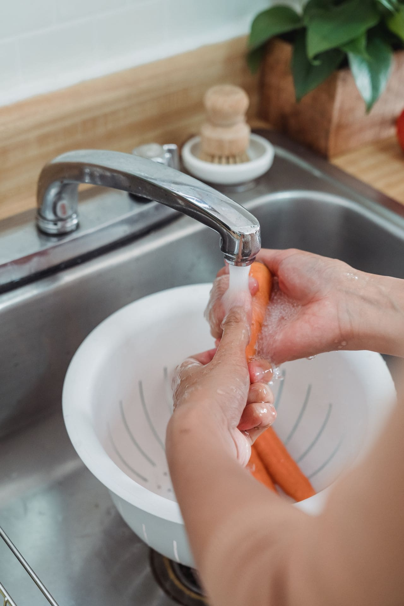
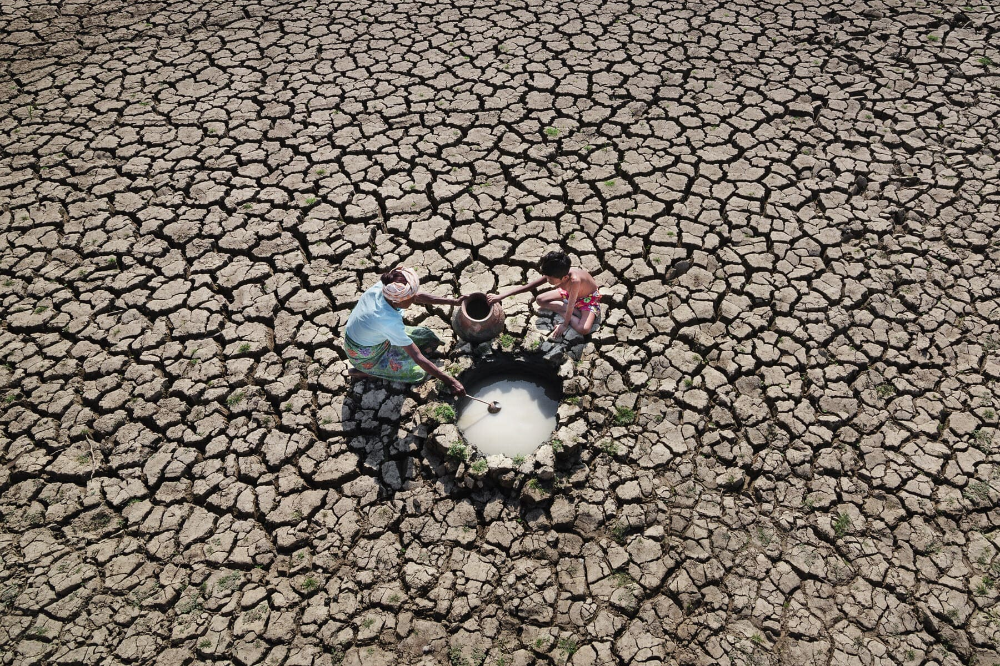

Water · Habit · Community Every DropCounts An interactive magazine on water, drought, and the habits that shape our future. Driving Question: How can we, Year 9 students at Sangria utilize English literature and persuasive writing to raise awareness of disaster preparedness among the residents of our city? Essential Question: How can we use persuasive communication to encourage current city residents to adopt long-term, drought-resilient water conservation habits? Created by high-school students.

In the weeks before the monsoon breaks, the soil across the dry zone turns to dust. The reservoirs recede, exposing the cracked mud of the riverbed, and the wells that supply nearby villages begin to pull up silt. It is a predictable seasonal clock, and it starts ticking earlier every year.
Video unavailable; showing the poster instead.
The water that passes through
A look at the freshwater that moves through the landscape before it ever reaches a tap.
This is the freshwater the world loses every year to drought, deforestation, and poor management. It is enough to meet the annual needs of 280 million people.
The supply exists, yet the management fails.
Page 4 · Assumptions
Common myths
Select a card to reveal the context behind these common beliefs.

Small habits, big numbers
See the Liters
The average running tap may use about 6 liters a minute. Drag the slider to see your yearly savings.
That is roughly 0 large water bottles.
Based on 1.5-liter bottles.
Page 6 · Make a commitment
Make It Official
People who make a commitment in front of others are more likely to follow through. Stating it out loud makes the habit harder to abandon.
Page 7 · Habits
Community Voices
These are from people who want to share change in habits and practices. When you answer on the left, yours will be added above too!
Page 8 · Readiness
Preparing for a Dry Season
Municipal water cuts or failing household wells can leave a home without a clean water supply for several days. This checklist covers the essential supplies to store and actions to take so your household is ready before a shortage occurs.
Page 9 · Mini-quiz
Save Every Drop
During a dry season, water from sinks and showers can be reused for flushing or gardening. Water containing harsh chemicals must be disposed of properly. To learn more, try the quiz below to learn which water sources are safe to reuse!
Source 1 of 5
Water from rinsing vegetables

Choose where this water can go.
Results
Reuse water only when it is safe. Water with harsh cleaners should not go on plants or be used for flushing.

Small habits,but lasting change Turn off the tap while brushing, reuse water where you can, and report leaks. Small choices help protect the water we share. Choose one water-saving habit and practise it every day Keep it up for a week, then invite someone at home to join you A practical water-wise guide by students